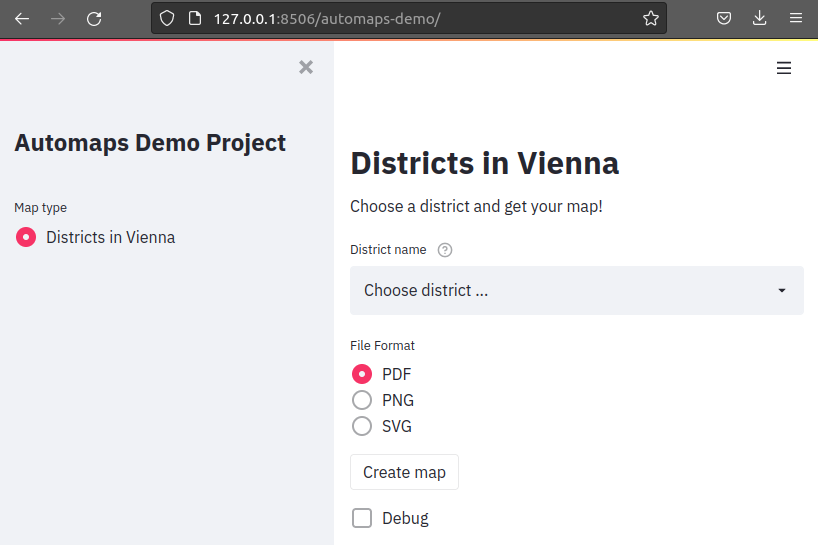
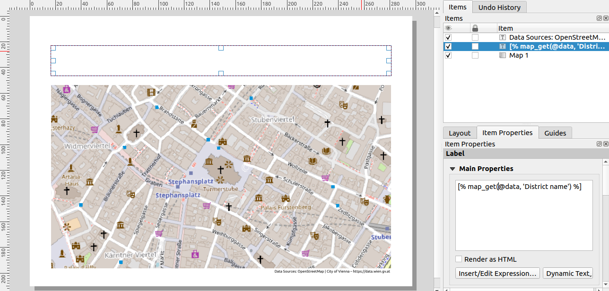
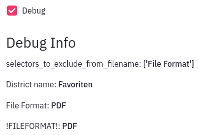

Getting Started with autoMaps#
Work through this tutorial to get your feets wet with autoMaps.
For further details on using autoMaps, please refer to the User Guide.
Installation#
Warning
Only tested on Ubuntu 20.04!
autoMaps uses QGIS, a free and open source geographic information
system, to generate maps. Get it on the
QGIS downloads page and install it
first. You probably should be familiar with QGIS and at least a little bit of PyQGIS
to get most out of autoMaps. Check out the
QGIS documentation, if necessary.
Then open your command line and clone the autoMaps repository:
git clone https://gitlab.com/its-vienna-region/digilab/automatisierte-karten
Change into the cloned directory:
cd automatisierte-karten
Install the automaps package for the Python interpreter used by QGIS, for
example like this:
/usr/bin/python3 -m pip install .
Info
If you are not sure, which Python interpreter is used by QGIS, open the QGIS GUI and run the following commands in the Python console:
import sys
sys.executable
This may return something like /usr/bin/python3. Use the path to this Python
interpreter in the command above.
Creating a demo project#
To get a feeling for the functionality and configuration of autoMaps you should first create a demo project.
On the command line, cd into a directory where you want to place the demo project.
Then run the following command:
automaps init-demo
Then start the demo app by running the following command:
automaps run dev -c ./automaps-demo/automapsconf.py
Open up http://127.0.0.1:8506/automaps-demo/ in your browser, and you'll see
the frontend of the demo project being displayed:

Choose a district and a file format, click on Create map and then on Download to get
your first automatically generated map.
Tip
If you encounter problems running the demo app, this might be because of a wrong
setting in automaps-demo/automapsconf.py. Try to change the option
QGIS_INSTALLATION_PATH to the correct path for your system. The path can be
determined by opening up the QGIS GUI and running QgsApplication.prefixPath()
in the Python console.
Exploring the demo project#
The demo project consists of the following files:

Geodata (demo_data.gpkg, demo_project.qgz)#
Let's take a look at the geodata first. It is stored in the
GeoPackage demo_data.gpkg and used in the
QGIS project demo_project.qgz. Open the qgz file with QGIS
and explore it. You'll discover, that it consists of only a few main elements.
It has two layers:

- districts: a polygon layer holding the geometries and some attributes of the 23
districts of Vienna, Austria. The attribute
NAMEKis used to provide the options for the frontend's drop down menu calledDistrict name. During the map creation process, the districts layer is filtered to only show the selected district. - OpenStreetMap: used as basemap.
The project also consists of a print layout called poly, which has three elements:

- The main map, called
Map 1. During the map creation process, the map view is updated to zoom to the selected district. - A label with the content
[% map_get(@data, 'District name') %]. During the map creation process, it is updated to hold the selected value of the drop down menu calledDistrict name. - Another label holding the data source information. This is just some static text.
The streamlit configuration (./streamlit/config.toml)#
autoMaps uses Streamlit as its frontend. Streamlit can be
configured using the config.toml file, as described in the
docs. In the case
of our demo project, it looks like this:
[server]
port = 8506
baseUrlPath = "automaps-demo"
The main configuration (automapsconf.py, automapsconf_poly.py, db.py)#
The main configuration is defined in a Python file, which typically is called
automapsconf.py and located in the same directory as app.py. For the demo project
this configuration is split into three files, two of them imported into the main file
automapsconf.py. This helps to keep everything clearly arranged and to store
database credentials in a dedicated file, which can be kept locally in version control
scenarios (e.g. by gitignoring it). This structure is recommended as best practice for
your own projects. For more information take a look at the
User Guide.
automapsconf.py requires some mandatory config options and supports a list of optional
config options. At this point, we will focus only on two of them, db and
MAPTYPES_AVAIL:
The configuration option db is necessary to connect to your project's (geo)database
and thus to present the available options in the frontend (like the values of the
drop down menu District name). It has to be a dictionary which can be converted
to an SQLAlchemy URL object.
For the demo project, only drivername and database are set to point to the
SQLite database which is part of the geopackage demo_data.gpkg:
db = {
"drivername": "sqlite",
"database": "demo_data.gpkg"
}
The configuration option MAPTYPES_AVAIL is a list of MapType objects:
MAPTYPES_AVAIL = [maptype_poly]
MapType objects serve as main autoMaps elements and help to structure your project.
Each MapType is tied to one or more QGIS print layouts (which define the looks of the
map) as well as to a single MapGenerator (which defines the processing steps). Take a
look at the code in automapsconf_poly.py which defines the MapType object
maptype_poly and compare it with the UI elements of the demo project's frontend:
import streamlit as st
from automaps.maptype import MapType
from automaps.selector import SelectorSimple, SelectorSQL
from generate_poly import MapGeneratorPoly
maptype_poly = MapType(
name="Districts in Vienna",
description="Choose a district and get your map!",
ui_elements=[
SelectorSQL(
"District name",
"""
select distinct NAMEK
from districtborder
order by NAMEK""",
st.selectbox,
widget_args={
"help": "Choose your district!"
},
no_value_selected_text="Choose district ...",
),
SelectorSimple(
"File Format",
["PDF", "PNG", "SVG"],
st.radio,
exclude_from_filename=True,
use_for_file_format=True,
),
],
print_layout="poly",
map_generator=MapGeneratorPoly,
)
You can see that the main part of the object initialization is the list passed to
the ui_elements argument. It holds two Selector objects, which define the available
options in the frontend and serve as connection to the backend, passing the selected
values as a dictionary called data to the processing machinery. Check the "Debug"
box in the frontend to see a representation of the data object:

The processing configuration (generate_poly.py)#
The data dictionary is consumed by MapGeneratorPoly, a class of type MapGenerator,
defined in generate_poly.py:
from collections import OrderedDict
from automaps.generators.base import MapGenerator, Step
class MapGeneratorPoly(MapGenerator):
name = "Districts in Vienna"
def _set_steps(self):
self.steps = OrderedDict(
{
"Initialize project": Step(self.init_project, 1),
"Filter layers": Step(self.filter_layers, 1),
"Zoom to extent": Step(self.set_extent, 1),
"Export map": Step(self.export_layout, 5),
}
)
def init_project(self):
self._init_layers()
self._set_project_variable(
"data", self.data
)
self._set_map_layer_visibility("districts", True)
self._set_map_layer_visibility("OpenStreetMap", True)
def filter_layers(self):
self._set_map_layer_filter_expression(
"districts", f"NAMEK = '{self.data['District name']}'"
)
def set_extent(self):
self._zoom_map_to_layer_extent(
"Map 1", self._get_map_layer("districts")
)
def export_layout(self):
self._export_print_layout(self.step_data.layout)
self.step_data.project.write("./poly_out.qgz")
del self.step_data.project
The MapGenerator defines the processing steps which are required to generate the
desired map, based on (1) the user selected options (stored in the self.data
property), and (2) on the layers, stylings, print layouts etc. in the QGIS project.
Each MapGenerator consists of at least one, but possibly dozens of processing steps.
The demo project's MapGeneratorPoly consists of four. They are declared in the
_set_steps() method and defined in the other corresponding methods. How to structure
your MapGenerator depends on your use case. Just take notice, that the progress of a
processing task is visualized in the frontend as a progress bar. You can call your
methods however you want.
So what happens here?
init_project()initializes all map layers, making them invisible and removing all filter conditions. It copies theself.datadictionary as project variable into the QGIS project and then turns on the required layers.filter_layers()takes the user selected value of theSelectorlabeledDistrict name(the drop down menu) to set a filter expression for thedistrictslayer.set_extent()zoomsMap 1of our print layoutpolyto the now filtered extent of thedistrictslayer.export_layout()finally exports the created map in the desired file format (PDF, PNG or SVG). It also writes the specific QGIS project file to the defined location, which can be handy for debugging your own autoMaps projects. Take a look atpoly_out.qgzin QGIS, inspect the filter expressions and thepolyprint layout!
The step methods use various helper methods, inherited from the MapGenerator base
class, such as _set_map_layer_visibility() or _export_print_layout(). Take a look
at the User Guide for a list of these helper
methods. You don't have to use them in your own projects, you could directly go for
the respective PyQGIS-calls instead. But they save you a lof of typing for the most
common tasks.
After running through all processing steps, the download button shows up on the frontend and the map is ready to be used.
Feel free to play around with the demo project to get better acquainted with the overall structure of an autoMaps project.
For further details on using autoMaps, please refer to the User Guide!
Creating your own project#
You can now go back to the command line and create your first autoMaps project from scratch. Run the following command:
automaps init-project PROJECT_NAME
Replace PROJECT_NAME with the desired name.
This will create a new directory with some stub files as starting point for your own
project. Maybe you like to start with editing automapsconf.py which includes some
hopefully helpful comments to get you started.